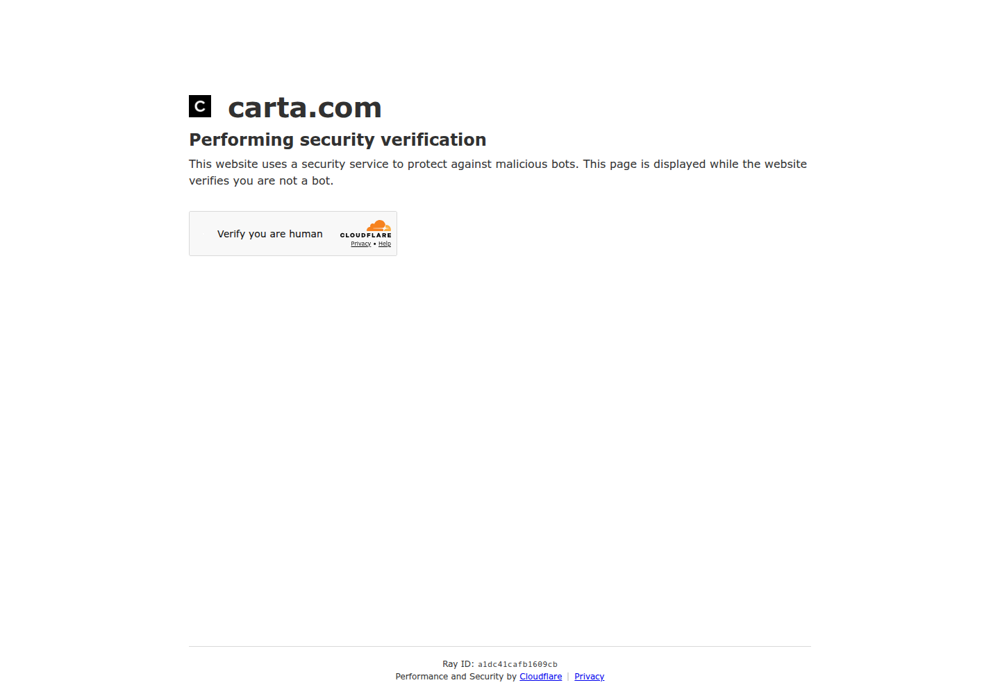

Profile
- Company
- Carta Data Rooms
- Url
- https://carta.com/learn/startups/equity-management/data-room/
- Source Category
- NDA & deal-room tools
- Research Status
- Deep Cited Research / Draft Complete
- Current Status
- live - Carta (parent company eShares, Inc. dba Carta, Inc.) verified live via direct fetch (HTTP 200, 2026); Data Room is an active paid add-on product within Carta's broader cap-table/equity management platform, not a standalone company
- Founded Launch Year
- Carta founded 2012 (as eShares); Carta's dedicated 'Data Room' / 'Data Room Plus' product tier is newer, marketed actively as of 2025-2026 per its support/pricing pages
- Company Age
- ~14 years (Carta overall, as of 2026)
- Hq Country
- United States (San Francisco/Palo Alto area; site lists US/Americas, UK/Europe, Asia Pacific/Middle East/Africa regional entities)
- Operating Area
- Global - US, UK/Europe, Asia Pacific/Middle East/Africa regional offerings listed in footer
- Target Users
- Startup founders (esp. Carta Launch / early-stage cap-table customers), fund administrators, VC/PE firms, companies preparing for M&A, IPO, or fundraising due diligence
- Product Category
- Equity/cap-table management platform with an integrated data room / secure document sharing add-on; NDA/e-sign gating; not a founder-investor matchmaking product
Product Flows
- Swipe Card Interface
- no - not found; standard dashboard/document-list interface
- Mutual Match
- no - not applicable
- Ai Matching Scoring
- no - not found on Carta Data Room pages (Carta's broader platform includes 409A valuation tools and other fintech features but no person/deal matching)
- Ai Deck Scoring
- not confirmed in this pass - prior pass flagged 'yes' but no explicit AI pitch-deck-scoring feature was found in Carta's Data Room documentation or learn-center content gathered here; downgrade to 'not found / no public source' pending direct verification of a specific Carta AI deck-review feature
- Founder To Founder Flow
- Not a founder-matching product; closest equivalent: Carta Launch customers (early-stage founders using Carta's free cap-table tier) can create their own data room for free -> organize cap table, pitch deck, financials, legal docs -> invite collaborators/co-founders with role-based access -> track document activity through Carta's dashboard.
- Founder To Investor Flow
- Founder builds a fundraising data room (cap table, pitch deck, financial statements, SAFEs, legal contracts) -> invites investors by email -> if NDA is enabled by the company, investor must review and sign the NDA before being granted access (confirmed via support.carta.com official help article 'Data Room Non-Disclosure Agreement (NDA)') -> paid tiers add dynamic watermarking, restricted/group visitor permissions, and full audit logs -> this is the CLOSEST direct analog in this batch to BizMatch's NDA-gated founder-to-investor unlock flow.
- Project Profiles
- not found / no public source in the sense of discoverable, browsable project profiles; Carta's 'profiles' are cap-table/company records tied to a specific paying customer account, not a marketplace-style directory
- Messaging Collaboration
- yes - investor communications/access controls
- Mobile App
- not found / no public source specific to Data Room; Carta has a general mobile app for cap-table/equity management, but no confirmation the Data Room product itself is mobile-optimized/app-based
- Web App
- yes
Security & Documents
- Nda Gated Unlock
- yes
- Data Room
- yes
- E Signature
- yes - subscription signing/closings
- Meeting Prep Ai Briefing
- no - not found
Pricing, Funding & Traction
- Pricing Model
- Tiered subscription: Data Room at $149/month (3 users included, NDA gating, dynamic watermarking, restricted visitor access) and Data Room Plus at $349/month (group visitor permissions, audit logs, up to 4,000 assets); no per-user fees beyond included seats; free data-room creation for Carta Launch customers
- Business Model
- B2B SaaS, feature-tiered subscription pricing (not per-seat) as an add-on to Carta's core equity-management platform
- Total Funding
- Carta (parent company) has raised well over $1 billion across many rounds historically (Series A-H+) and was valued near/above $7-8 billion at peak (2021 tender); Data Room itself is a feature/product line, not separately funded - total_funding here refers to parent Carta, not a standalone Data Room business
- Funding Rounds
- Multiple rounds historically (Series A through late-stage/tender rounds) led by firms including Andreessen Horowitz, Union Square Ventures, Spark Capital, Tribe Capital, Silver Lake, among others (per public Carta funding history) - exact figures not re-verified line-by-line in this pass; treat overall funding figure as approximate
- Investors
- Andreessen Horowitz, Union Square Ventures, Spark Capital, Tribe Capital, Silver Lake, and others (Carta parent company; not independently re-verified investor-by-investor in this pass)
- Funding Source Type
- VC/growth-equity backed, private company
- Last Funding Date
- not found / no public source re-verified in this pass (Carta's most recent large round predates this research window; recommend direct Crunchbase/PitchBook check for exact latest date)
- Users Traction
- Carta overall serves a very large base of startups/cap tables (widely cited as 40,000+ companies historically); Data Room-specific usage numbers not separately disclosed
- Deals Funding Facilitated
- not found / no public source specific to Data Room product (Carta's overall platform has facilitated a very large volume of equity issuance/fundraising, but no Data-Room-specific dollar figure found)
- Partnerships
- Part of the broader 'Carta Equity Suite' (Cap Table Management, 409A Valuations, SAFE Financings, Financial Reporting, Equity Advisory, Total Compensation, Liquidity, QSBS Attestation) and 'Carta Fund ERP' / 'Carta Law' product lines
- Media Coverage
- Carta as a company receives regular tech/finance press coverage (TechCrunch, Forbes, etc. historically) primarily around cap-table management, 409A valuations, and a 2024 controversy over data usage; Data Room specifically is covered mainly in its own learn-center content and third-party VDR comparison/review sites (e.g., ellty.com, papermark.com)
- Product Update Activity
- Active - learn-center article dated April 2, 2025; ongoing blog posts referencing 2026 product updates (e.g., 'One-to-many reporting in Data Collection')
- Acquisition Rebrand History
- Carta was originally named 'eShares' before rebranding to Carta; no acquisition of the Data Room product specifically - it is an organically built feature of the core platform
Scores
- Product Overlap Score
- 3
- Feature Maturity Score
- 3
- Market Traction Score
- 4
- Funding Strength Score
- 5
- Ai Depth Score
- 1
- Nda Security Strength Score
- 4
- Network Moat Score
- 3
- Direct Threat Score
- 3.4
- Source Confidence
- High
Evidence Notes
- Primary Sources
- https://carta.com/learn/startups/equity-management/data-room/
https://support.carta.com/kb/guide/en/data-room-non-disclosure-agreement-nda-k2pVF7vS1Y/Steps/3725147
https://support.carta.com/kb/guide/en/how-to-set-up-and-manage-company-data-rooms-8gIre2wO87/Steps/3724883
https://support.carta.com/kb/guide/en/how-to-manage-vc-fundraising-data-rooms-MHvOEzfZwJ/Steps/3724875
https://carta.com/c/investor-relations/
https://releasenotes.carta.com/vc-fundraising-data-room-3gzxVC - Secondary Sources
- https://www.ellty.com/blog/carta-data-room
https://www.ellty.com/blog/virtual-data-room-for-series-b
https://www.papermark.com/blog/nda-compliance-virtual-data-room - Unsupported Claims
- AI deck-scoring flag from prior pass could not be substantiated with a specific Carta feature in this pass - flagged as unverified rather than confirmed. Total funding figures for parent Carta are approximate/not re-verified round-by-round in this session.
- Contradictions
- RESOLVED: The prior pass flagged a contradiction between Carta's pricing page marketing 'NDA gating' and a third-party claim that 'NDA management isn't natively built in.' This pass found BOTH claims are partially true depending on which Carta product is meant: Carta's dedicated, PAID 'Data Room' / 'Data Room Plus' product (confirmed via Carta's own official support documentation, support.carta.com/kb/guide/en/data-room-non-disclosure-agreement-nda) DOES natively support requiring visitors to sign an NDA before data-room access is granted - this is a real, documented, native feature. The third-party skepticism appears to stem from evaluations of Carta's BASE/free cap-table product (or older versions of the product) which lacks this VDR-grade feature, or from reviewers comparing it unfavorably to dedicated VDR platforms (Datasite, Ansarada, Digify) on depth of NDA/watermarking controls rather than presence/absence. CONCLUSION: NDA gating is native and real in Carta's paid Data Room tier, but it is a lighter-weight version than dedicated VDR competitors, and is NOT available in Carta's free/base cap-table tier without upgrading to the Data Room add-on.
- Last Checked
- 2026-07-19
- Notes
- Carta is the most directly comparable case in this batch to BizMatch's founder-investor NDA-gated flow, since it's explicitly positioned for startup fundraising data rooms (not just enterprise M&A). Its funding_strength_score (5) reflects the WELL-FUNDED PARENT COMPANY, not the Data Room product line specifically, which is a minor feature/revenue line within Carta's broader business.
Registration Flow
Research date: 2026-07-19. Screenshots are sanitized public copies from the private registration-flow capture set; credentials, tokens, verification links/codes, browser chrome, and private identifiers are not intentionally published.
Outcome: stopped at CAPTCHA / Cloudflare / anti-bot verification.
Stop point: Untouched Cloudflare 'Verify you are human' security-verification interstitial on carta.com, before the Data Rooms product page, registration form, credential entry, account creation, or email verification
Blocker / boundary: Carta's official Data Rooms URL presented a Cloudflare human-verification challenge before the product page or any registration control became accessible. The task explicitly requires stopping at CAPTCHA/Cloudflare and prohibits bypassing anti-bot controls.
- Cloudflare security verification stop point. Opening Carta's official Data Rooms product URL through the required authenticated automated browser Chromium session reached a Cloudflare interstitial titled 'Just a moment...'. The page states that carta.com is performing security verification and presents a 'Verify you are human' challenge. Per the task's anti-bot boundary, the challenge was not clicked or bypassed.
